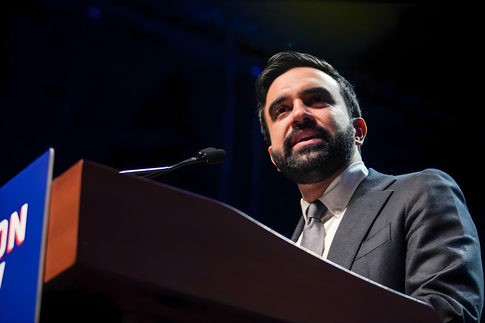

Depuis son entrée à l'Hôtel de Ville le 1er janvier 2026, Zohran Mamdani incarne une rupture inédite dans l'histoire politique new-yorkaise. Premier maire musulman de la ville, premier socialiste démocrate à diriger la capitale financière mondiale, il a fait de la taxation des ultra-riches la colonne vertébrale de son mandat. Entre taxe sur les pied-à-terre de luxe, bras de fer avec Albany et réplique virulente des milliardaires, New York devient le laboratoire américain d'un débat mondial sur la redistribution.
Né en 1991 à Kampala (Ouganda) d'un père anthropologue à Columbia University et d'une mère cinéaste — Mira Nair —, Zohran Kwame Mamdani arrive aux États-Unis à sept ans. Naturalisé américain en 2018, diplômé de Bowdoin College en études africaines, il devient élu à l'Assemblée de l'État de New York en 2021, représentant le quartier d'Astoria, dans le Queens. Sa candidature à la mairie, annoncée en octobre 2024, est initialement perçue comme marginale face à l'ancien gouverneur Andrew Cuomo.
La surprise vient en juin 2025 : Mamdani remporte la primaire démocrate, battant Cuomo sur un programme articulé autour de l'accessibilité de la ville — gel des loyers, bus publics gratuits et rapides, épiceries municipales dans chaque borough, et surtout, fiscalité renforcée sur les plus riches. Trump l'ayant qualifié de « petit communiste » et menacé de couper les financements fédéraux à New York, Mamdani remporte néanmoins l'élection générale du 4 novembre 2025, face à Cuomo — reconverti en candidat indépendant — et au républicain Curtis Sliwa. Il devient ainsi le premier maire musulman et d'origine sud-asiatique de New York, ainsi que le plus jeune en plus d'un siècle.
À son arrivée à l'Hôtel de Ville, Mamdani hérite d'un déficit budgétaire que son administration chiffre à 12 milliards de dollars sur deux ans. Face à cette contrainte, le maire adopte une posture claire : pas de coupes dans les services sociaux, pas d'augmentation des impôts fonciers pour les propriétaires de classe moyenne. Sa réponse est double — négocier avec Albany pour obtenir des aides supplémentaires, et introduire une fiscalité ciblée sur les ultrariches.
La stratégie fonctionne en partie. Lors de la présentation du budget exécutif de 124,7 milliards de dollars en mai 2026, Mamdani annonce avoir ramené le déficit à zéro, grâce à 7,6 milliards de dollars d'aide de l'État — obtenus après un bras de fer tendu avec la gouverneure Kathy Hochul — et à 1,77 milliard d'économies internes, notamment par la réduction des heures supplémentaires et le gel des postes vacants. Une partie du financement repose également sur un décalage dans les versements aux fonds de pension municipaux, critiqué par des analystes qui y voient un report de charge sur les contribuables futurs.
Le 15 avril 2026, Jour de l'impôt aux États-Unis, Mamdani publie une vidéo filmée devant le 220 Central Park South — immeuble de luxe où le milliardaire Ken Griffin, fondateur du fonds spéculatif Citadel, possède un penthouse de 23 000 pieds carrés acheté en 2019 pour 238 millions de dollars, un record absolu pour une vente résidentielle aux États-Unis. Dans la vidéo, le maire annonce la création de la première taxe pied-à-terre de l'État de New York : une redevance annuelle sur les résidences secondaires d'une valeur supérieure à 5 millions de dollars dont les propriétaires ne résident pas à New York à titre principal.
Le taux proposé varie entre 0,5 % et 4 % de la valeur marchande du bien, en plus des taxes foncières existantes. La mesure, soutenue par la gouverneure Hochul, doit encore être approuvée par le Parlement de l'État. Les projections officielles anticipent 500 millions de dollars de recettes annuelles, ciblant quelque 11 200 propriétés dont la valeur dépasse 5 millions de dollars. Le Bureau du contrôleur de la ville estime toutefois que les recettes réelles pourraient se situer entre 340 et 380 millions de dollars, après prise en compte des comportements d'adaptation des propriétaires et des mises en location exemptées.
Mamdani publie sa vidéo devant le 220 Central Park South. La vidéo cumule rapidement plus de 52 millions de vues sur X et 470 000 vues sur la chaîne officielle de la ville.
Ken Griffin déclare que Citadel a déposé un permis à Miami pour agrandir ses locaux en réponse à la politique fiscale de Mamdani. Il affirme que la vidéo l'a « mis en danger » en référence à l'assassinat du PDG de UnitedHealthcare en 2024.
Le directeur des opérations de Citadel, Gerald Beeson, suggère que la rénovation du 350 Park Avenue — projet à plusieurs milliards créateur de 6 000 emplois dans la construction — devient « un vrai sujet de débat » au sein de la firme.
Mamdani présente le budget exécutif de 124,7 milliards de dollars. Il annonce avoir comblé le déficit sans hausse de l'impôt foncier général et sans ponction sur le fonds de réserve de la ville.
Les ambitions initiales de Mamdani allaient plus loin que la seule taxe pied-à-terre. Pendant sa campagne, il avait promis une hausse de 2 points du taux marginal d'imposition sur le revenu des New-Yorkais gagnant plus d'un million de dollars par an, ainsi qu'un relèvement du taux d'imposition des sociétés de 7,25 % à 11,5 %. Ces deux mesures nécessitent l'aval d'Albany. Hochul, bien que soutenant la taxe pied-à-terre, a refusé d'avaliser une hausse générale des impôts sur le revenu, estimant le risque de fuite fiscale trop élevé.
Le débat sur la « fuite des riches » divise économistes et responsables politiques. Griffin et ses défenseurs avancent qu'1 % des contribuables acquittent déjà 45 % de l'ensemble des recettes fiscales de la ville, faisant de New York une ville particulièrement vulnérable aux départs. Mamdani, fort de l'expérience de sa mandature précédente à l'Assemblée, où une hausse d'imposition sur les millionnaires n'avait pas déclenché d'exode, retourne l'argument : New York compte aujourd'hui plus de millionnaires qu'avant ces hausses passées. Des économistes comme Vanessa Williamson (Brookings) relativise la menace : les liens sociaux et professionnels que les ultrariches ont noués dans une ville donnée sont difficiles à rompre, et aucune étude à l'échelle internationale ne démontre qu'une seule mesure fiscale suffit à provoquer un départ massif des grandes fortunes des métropoles mondiales.
L'expérience Mamdani dépasse le cadre d'une politique municipale. Elle repose une question que toutes les grandes démocraties libérales affrontent : jusqu'où la fiscalité peut-elle corriger des inégalités structurelles sans altérer les mécanismes d'attraction qui font la force économique d'une métropole ? À New York, où le 1 % le plus aisé contribue à près de la moitié des recettes fiscales, la tension est particulièrement aiguë. La réussite ou l'échec du pari Mamdani sera scrutée bien au-delà des États-Unis, comme un test de la viabilité du socialisme démocratique dans la capitale financière du monde.
Since taking office on 1 January 2026, Zohran Mamdani has embodied an unprecedented shift in New York's political history. The city's first Muslim mayor and first democratic socialist to lead the world's financial capital, he has made taxing the ultra-wealthy the cornerstone of his administration. Between a pied-à-terre tax on luxury second homes, a stand-off with Albany, and fierce pushback from billionaires, New York has become America's laboratory for a global debate on redistribution.
Born in 1991 in Kampala, Uganda, to an anthropologist father at Columbia University and a filmmaker mother — Mira Nair — Zohran Kwame Mamdani arrived in the United States at age seven. Naturalised as an American citizen in 2018 and a graduate of Bowdoin College with a degree in Africana Studies, he was elected to the New York State Assembly in 2021, representing the Astoria neighbourhood in Queens. When he announced his mayoral candidacy in October 2024, he was largely dismissed as a long-shot against former Governor Andrew Cuomo.
The shock came in June 2025: Mamdani won the Democratic primary, defeating Cuomo on a platform centred on making the city affordable — rent stabilisation, free and fast public buses, city-run grocery stores in each borough, and above all, stronger taxation of the wealthy. Despite Trump labelling him a "100% Communist Lunatic" and threatening to cut federal funding to New York, Mamdani won the general election on 4 November 2025, beating Cuomo — running as an independent — and Republican Curtis Sliwa. He became the first Muslim and South Asian mayor of New York City, and the youngest in more than a century.
On arriving at City Hall, Mamdani inherited a budget deficit his administration put at $12 billion over two years. Faced with this constraint, the mayor adopted a clear stance: no cuts to social services, no increase in property taxes for middle-class homeowners. His two-pronged response was to negotiate with Albany for additional state aid, and to introduce targeted taxes on the ultra-wealthy.
The strategy worked in part. When presenting the $124.7 billion executive budget in May 2026, Mamdani announced he had brought the deficit to zero — thanks to $7.6 billion in state aid secured after a tense stand-off with Governor Kathy Hochul, and $1.77 billion in internal savings, primarily through reduced overtime costs and a freeze on filling vacant posts. Part of the financing also rests on a deferral of payments into the city's municipal pension funds, a move criticised by analysts who see it as shifting today's obligations onto future taxpayers.
On 15 April 2026 — Tax Day in the United States — Mamdani posted a video filmed outside 220 Central Park South, a luxury skyscraper where billionaire hedge fund CEO Ken Griffin owns a 23,000-square-foot penthouse purchased in 2019 for $238 million, a record for a US residential sale. In the video, the mayor announced the creation of New York State's first-ever pied-à-terre tax: an annual levy on second homes worth more than $5 million whose owners do not reside primarily in New York City.
The proposed rate ranges from 0.5% to 4% of the property's market value, on top of existing property taxes. The measure, backed by Governor Hochul, still requires approval from the State Legislature. Official projections put annual revenues at $500 million, targeting approximately 11,200 properties valued above $5 million. However, the City Comptroller's office has estimated that real revenues could fall between $340 and $380 million once behavioural adaptations by owners and exempt rental conversions are accounted for.
Mamdani posts his video outside 220 Central Park South. It quickly accumulates more than 52 million views on X and 470,000 views on the city's official channel.
Ken Griffin announces that Citadel has filed a permit in Miami to expand its offices in response to Mamdani's tax policy. He claims the video put him "in harm's way," citing the 2024 assassination of the UnitedHealthcare CEO.
Citadel's COO Gerald Beeson suggests the redevelopment of 350 Park Avenue — a multi-billion-dollar project set to create 6,000 construction jobs — has become "a real topic of debate" within the firm.
Mamdani presents the $124.7 billion executive budget, declaring the deficit closed without a general property tax hike and without drawing on the city's rainy-day fund.
Mamdani's initial ambitions went further than the pied-à-terre tax alone. On the campaign trail, he had promised a 2-percentage-point hike in the marginal income tax rate on New Yorkers earning more than $1 million a year, and a rise in the corporate tax rate from 7.25% to 11.5%. Both measures require Albany's approval. Hochul, while supporting the pied-à-terre tax, refused to endorse a broad income tax increase, judging the risk of capital flight too high.
The debate over a "flight of the rich" divides economists and policymakers. Griffin and his supporters argue that 1% of taxpayers already account for 45% of the city's total tax revenue, making New York particularly vulnerable to departures. Mamdani, drawing on his earlier experience in the State Assembly — where a millionaires' tax did not trigger an exodus — turns the argument around: New York counts more millionaires today than before those past increases. Economists such as Vanessa Williamson of Brookings offer nuance: the social and professional ties the ultra-wealthy build in a given city are hard to sever, and no global study demonstrates that a single tax measure is sufficient to prompt a mass departure of large fortunes from world-class cities.
The Mamdani experiment goes beyond municipal policy. It revives a question confronting all major liberal democracies: how far can taxation correct structural inequalities without undermining the engines of attraction that make a great city economically powerful? In New York, where the wealthiest 1% account for nearly half of all tax revenues, this tension is especially acute. Whether Mamdani's wager succeeds or fails will be watched far beyond the United States — as a test of the viability of democratic socialism in the financial capital of the world.